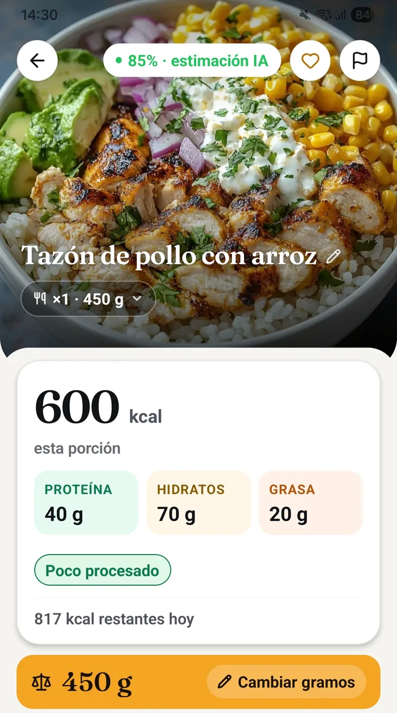
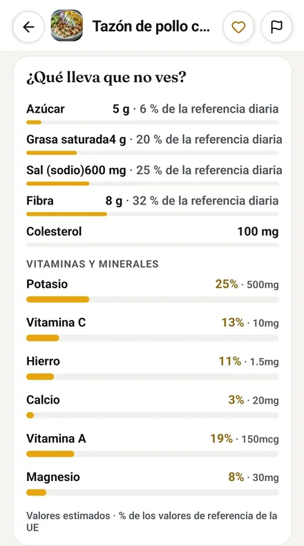
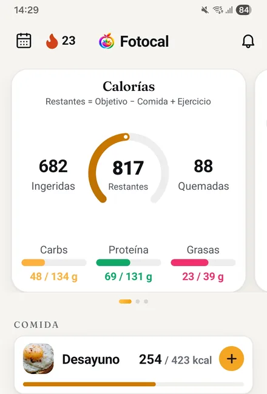
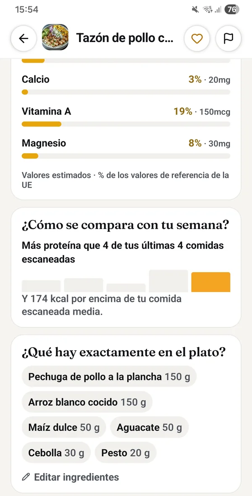

Calorías con foto, gratis: apunta con la cámara y llévate el plato entero.
Una fotografía es toda la entrada. Fotocal identifica el plato y los ingredientes que lo componen, estima cuánto hay servido y devuelve calorías, macros, una puntuación de salud, los alérgenos que detecta, un resumen breve de tu coach y una alternativa realista. Premium abre el panel de debajo: la lista completa de micronutrientes, el nivel de procesamiento del alimento y su carga glucémica. No se guarda nada hasta que tú lo digas. Gratis y sin tarjeta: 2 escaneos con IA al día; Premium los deja sin límite.

Entra una foto, sale el cuadro completo.
Casero, de restaurante, para llevar o las sobras de anoche: la entrada siempre es la misma y el esfuerzo también.
-
Fotografía el plato
Lo que tengas delante, esté hecho como esté. Sin buena luz, sin colocar la comida, sin poner una moneda al lado como referencia.

-
La IA lo lee
Identifica el plato, separa los ingredientes que ve y estima la ración a partir de lo que hay servido.

-
Ajusta las cantidades
La estimación es un punto de partida, no una sentencia. La hoja de porción multiplica el plato entero, ×0,5 para la mitad, ×2 para el doble, o lo reparte entre dos o tres personas, y los gramos, las calorías y los macros siguen. Cada ingrediente detectado también se puede editar por separado.

-
Corrige lo que haga falta y guarda
Puedes editar, cambiar o quitar cualquier ingrediente detectado, y añadir lo que la cámara no podía ver. Es un borrador hasta que lo guardas.



Nueve cosas, de una sola foto.
Casi todas las apps se quedan en el recuento de calorías. Lo útil suele ser todo lo que viene después.

-
El plato y sus ingredientes
Nombrados uno a uno y no como un bloque, para que veas qué cree que está mirando.
-
Cantidades por ingrediente
Leídas del plato en vez de supuestas a partir de una ración media, y cada una se puede cambiar, en gramos o en unidades, con más y menos.
-
Calorías y macros
La cifra principal más el reparto de proteínas, carbohidratos y grasas que hay detrás.
-
Dos micronutrientes gratis, el resto con Premium
Cada escaneo lee la lista entera. El plan gratuito muestra los dos primeros, y Premium abre el resto junto con fibra, azúcar, sodio y grasas saturadas.
-
Una puntuación de salud
Un solo número de cómo queda la comida en conjunto, para comparar dos platos sin leer dos tablas.
-
Nivel de procesamiento NOVA
Cuán procesado está el alimento: una pregunta muy distinta de cuántas calorías tiene, y que pesa a lo largo de los meses.
-
Carga glucémica
Cuánto es probable que esta ración concreta te mueva el azúcar en sangre, según la cantidad que tienes delante.
-
Alérgenos
Señalados a partir de los ingredientes que detecta, para que un plato compartido o desconocido no sea una apuesta.
-
Un resumen del coach y un cambio
Una lectura en lenguaje llano de la comida y un único cambio concreto que la mejoraría. No es un sermón: es una sugerencia.

El plato de restaurante que no puedes buscar
Sin código de barras, sin etiqueta y sin saber muy bien qué le ha puesto la cocina. Una foto devuelve las calorías, la puntuación y un cambio concreto para la próxima vez, antes de que se enfríe el plato.
Para los platos de aquí, la cifra de referencia está en la tabla de calorías de los platos españoles, por ración tal como se sirve y por 100 g: es la misma base de datos que usa el escáner.

El resultado sabe qué más has escaneado esta semana.
Debajo de los nutrientes, cada escaneo se compara con tus propias comidas recientes: más o menos proteína que tus últimos platos escaneados, y cuántas calorías por encima o por debajo de tu comida escaneada media. Después, los ingredientes exactos que ha detectado, cada uno con sus gramos, listos para editar.
- Tus objetivos van primero: la misma comida recibe un consejo distinto si estás en déficit, en mantenimiento o ganando masa.
- Lee el resto del día. Si a las ocho de la tarde vas corto de proteína, el cambio irá de proteína.
- Propone un cambio, no una reescritura. Algo que podrías hacer de verdad la próxima vez, planteado como una opción y no como una norma.
- Todo lo que escaneas alimenta la pestaña de Recomendaciones y tu Informe Semanal, así que el consejo se vuelve más concreto cuanto más registras.
Preguntas sobre el escaneo por foto
¿Cuánta precisión tiene una estimación por foto?
Es una estimación, y preferimos decirlo a fingir lo contrario. Para el seguimiento del día a día es lo bastante buena como para ser útil, y corregir los gramos del ingrediente principal cierra casi toda la diferencia que queda. Si una comida importa de verdad, pesa el ingrediente principal y ajústalo.
¿Y si se equivoca con un ingrediente?
Lo corriges. Todo lo detectado es editable antes de guardar: cámbialo, ajusta sus gramos, reemplázalo, bórralo o añade lo que se haya dejado. Corregir lleva un par de segundos y los totales se actualizan sobre la marcha.
¿Funciona con platos de restaurante y platos mezclados?
Sí, y ahí es donde más se nota. Un curry, un salteado o unas tapas no tienen código de barras ni etiqueta, que es justo la situación que peor resuelven las apps de buscar en una base de datos.
¿Se registra algo automáticamente?
No. Un escaneo produce un borrador. No entra nada en tu diario, en tus anillos ni en tus totales hasta que tocas guardar.
¿Cuál es la mejor aplicación para contar calorías con fotos?
Júzgala por cuatro cosas, no por el vídeo de la demo: si reconoce lo que comes tú, con qué claridad dice que está estimando, lo rápido que corriges gramos e ingredientes antes de guardar y qué permite el plan gratis. Fotocal marca cada resultado como estimación IA con su confianza, te deja cambiar la ración y los ingredientes, conoce los platos españoles y da 2 escaneos por foto al día gratis y sin tarjeta. Que sea la mejor para ti depende de cuántas veces escanees.
¿Cuál es la mejor IA para contar calorías?
Ninguna acierta siempre, así que la mejor es la que enseña su trabajo. Una foto le dice al modelo qué hay en el plato, pero no cuánto aceite llevó ni cómo de gruesa es la ración, de modo que toda app honesta está estimando. Lo que las separa es si la estimación lleva una confianza, si la corriges en dos toques y si guarda tu propio historial para comparar. Fotocal hace las tres cosas y te dice cómo de segura está en cada resultado.
Sigue leyendo
Lo que hay detrás de los números de la pantalla.
Fotografía tu próxima comida y velo todo.
Fotocal es gratis para empezar, con una prueba gratis de 5 días en los planes de pago.
Descárgala gratis En Google Play · Android